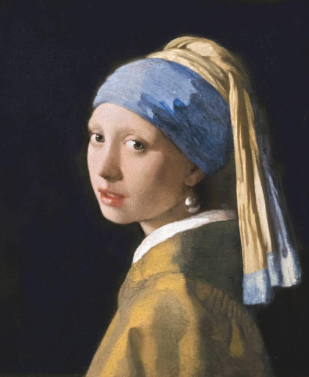
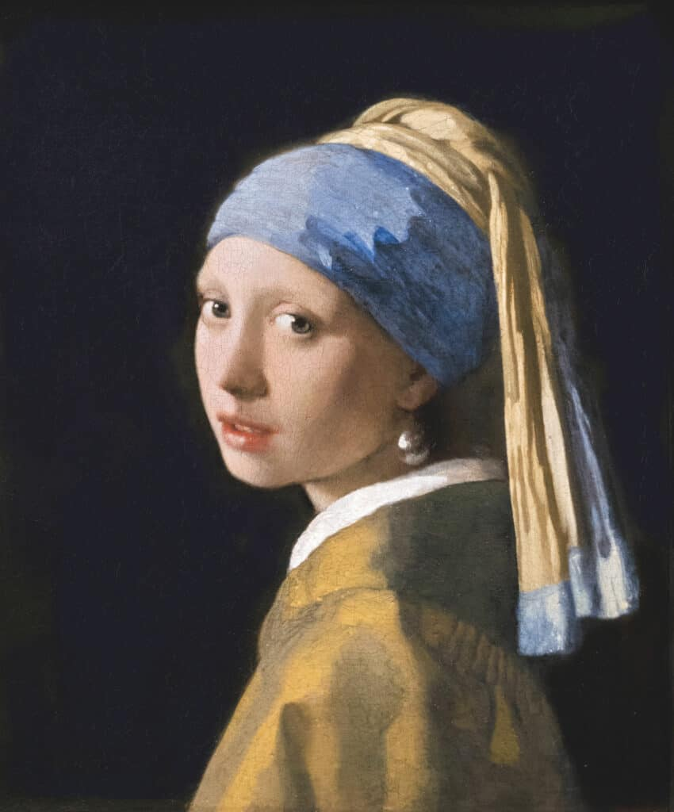
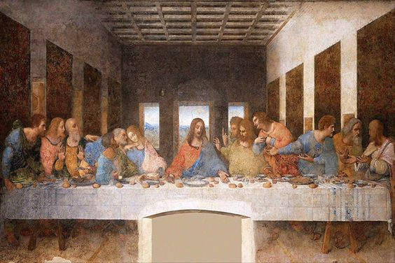
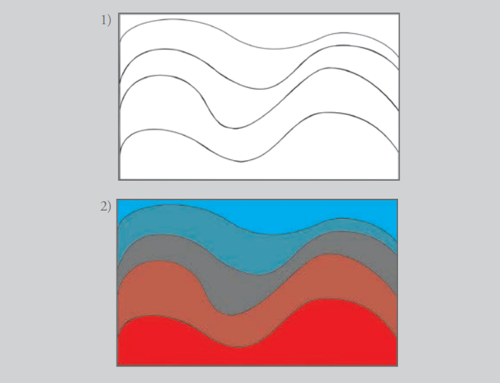

HISTÓRIA
DAS CORES
Explore o universo das cores, suas propriedades físicas, percepção visual e aplicações na arte, design e tecnologia.
Explore o universo das cores, suas propriedades físicas, percepção visual e aplicações na arte, design e tecnologia.

As cores acompanham a humanidade desde a pré-história. Os primeiros humanos utilizavam pigmentos naturais feitos de terra, carvão e minerais para criar pinturas rupestres e representar caça, espiritualidade e sobrevivência. No Egito Antigo, as cores ganharam significados sagrados: azul representava eternidade, verde simbolizava vida, dourado representava os deuses. Na Grécia Antiga e no Império Romano, certas cores mostravam riqueza e poder, como o roxo imperial. Durante a Idade Média, as cores passaram a ter forte influência religiosa e simbólica. No Renascimento, artistas começaram a estudar luz, sombra e profundidade, revolucionando o uso das cores na arte. Depois, Isaac Newton descobriu que a luz branca contém todas as cores do espectro, criando a base da teoria moderna das cores. Com a Revolução Industrial, surgiram pigmentos sintéticos e as cores se tornaram mais acessíveis ao mundo.
Viveu entre 1452 e 1519. Foi uma das principais figuras do chamado Renascimento italiano e produziu obras que são bastante conhecidas e imitadas, como a “Monalisa”
Foi o gênio máximo do Renascimento. Embora famoso pela pintura na Capela Sistina, sua verdadeira paixão era a escultura. Ele considerava a escultura a forma de arte mais nobre
Foi um dos maiores expoentes do pós-impressionismo, mas viveu uma vida marcada por dificuldades financeiras e psicológicas. Ele começou a pintar apenas aos 27 anos,

A Moça com Brinco de Pérola.

O Juízo Final.

A última Ceia

A Morte de Sardanápalo.

O Balanço.
Cores frias e terrosas.
LONGE E PERTO E PERTO E LONGE
Objetivo: exercitar a manipulação da construção simbólica da distância agregada ao azul,
iniciada por Leonardo da Vinci em seus manuscritos sobre a “perspectiva aérea”.
Material: papel para guache, tinta guache nas cores vermelho, azul ciano e branco, pincéis.
Descrição: desenhar linhas como “montanhas” e pintar os espaços, no sentido de baixo para
cima, do vermelho ao azul ciano. Deve-se acrescentar o azul ao vermelho de forma crescente,
a ponto que a última faixa seja inteiramente azul. Observe a imagem e perceba o quanto o
azul agrega o signifi cado da distância em relação ao vermelho, reforçando a perspectiva.
